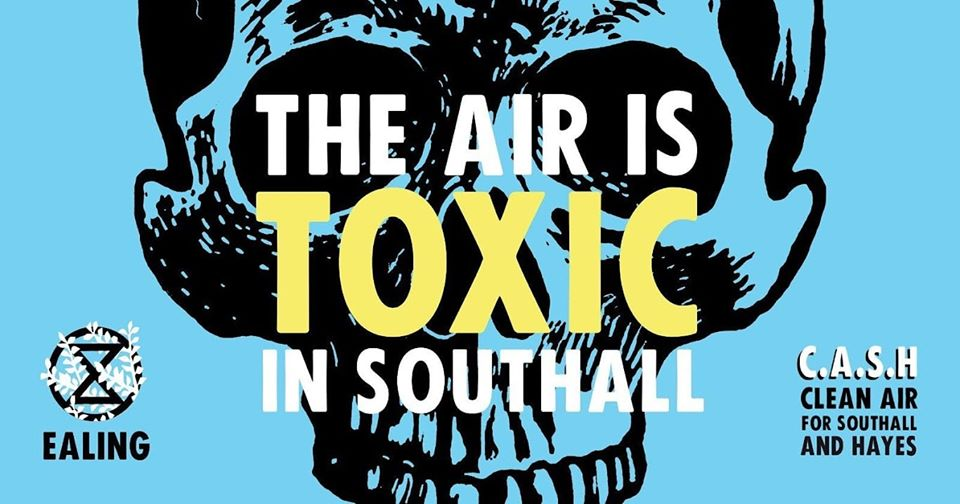
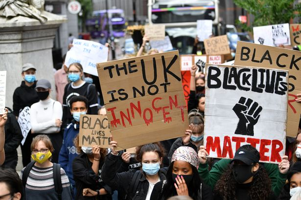
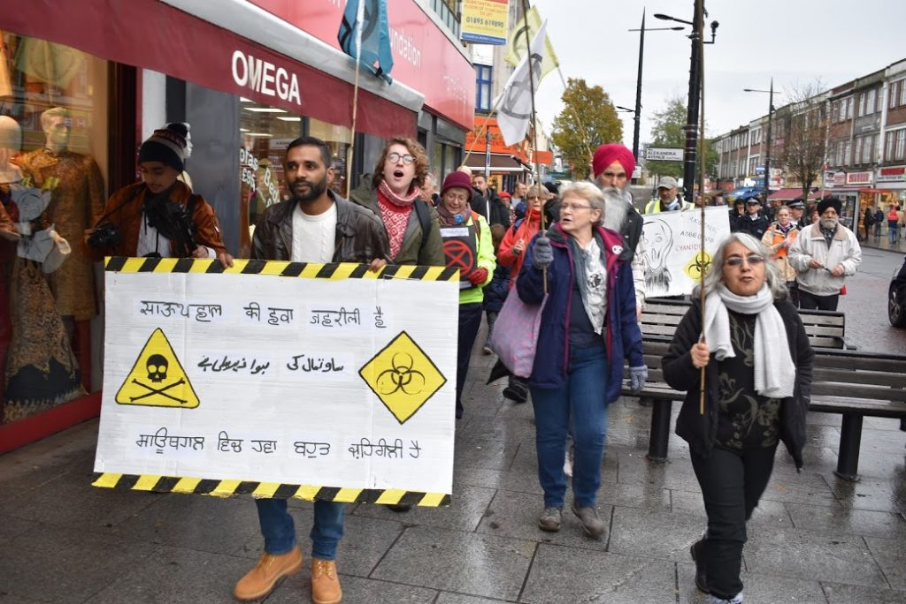
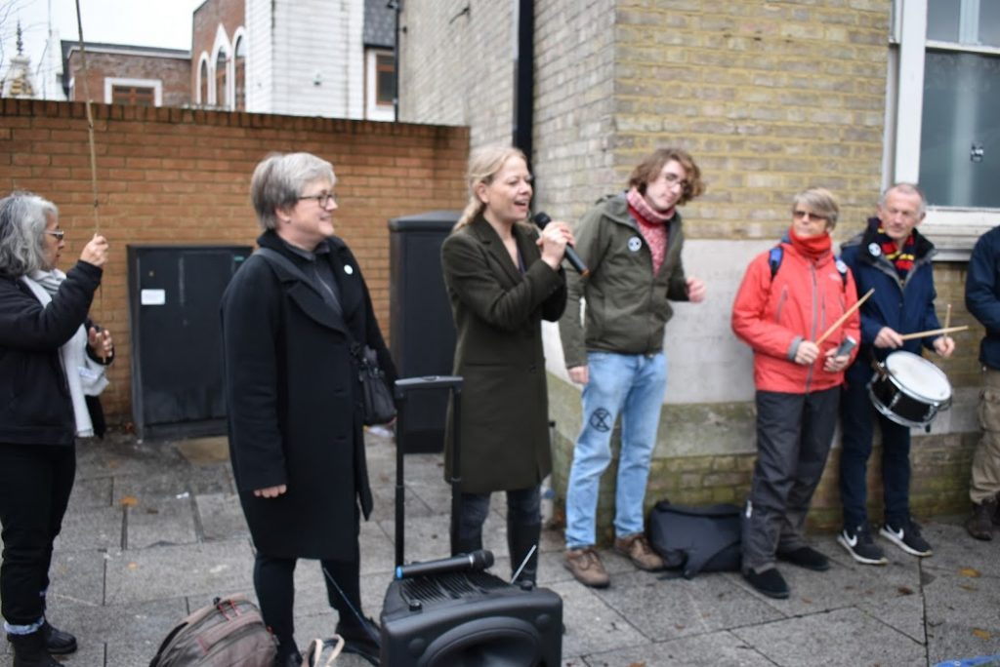
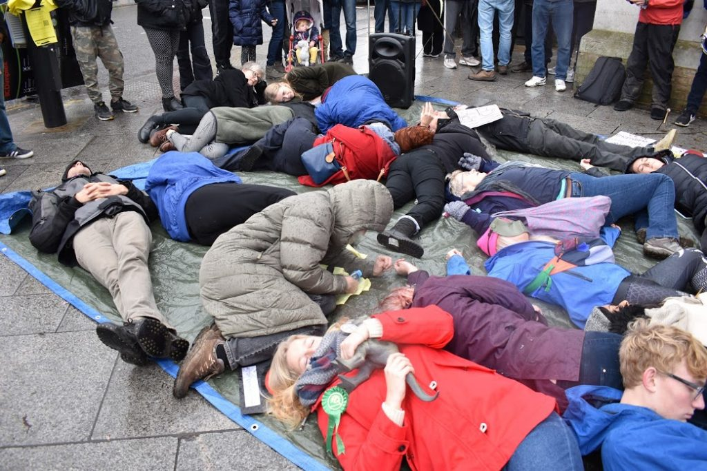
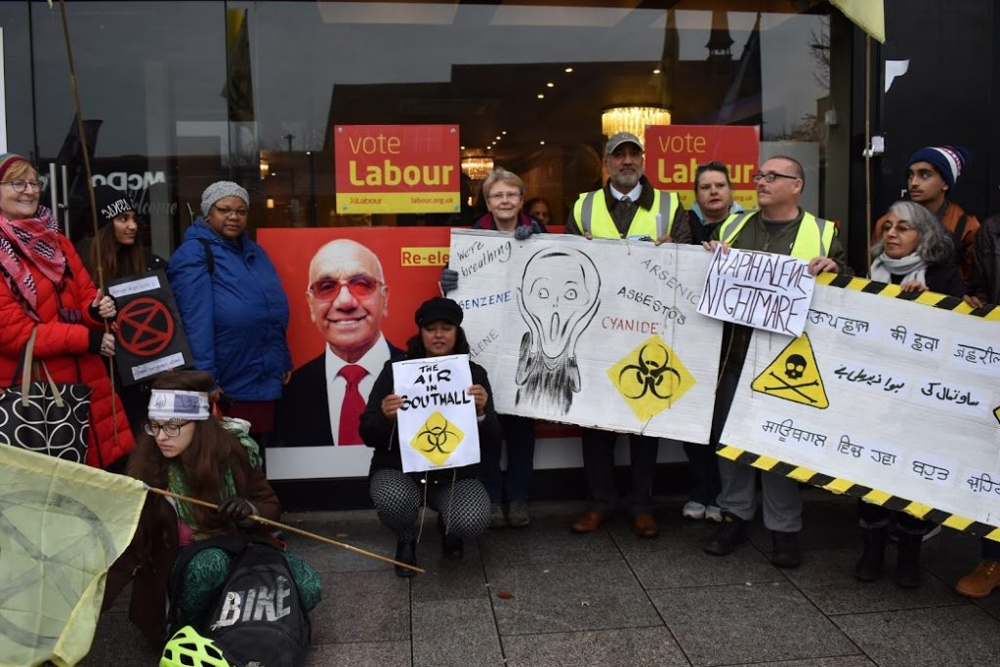
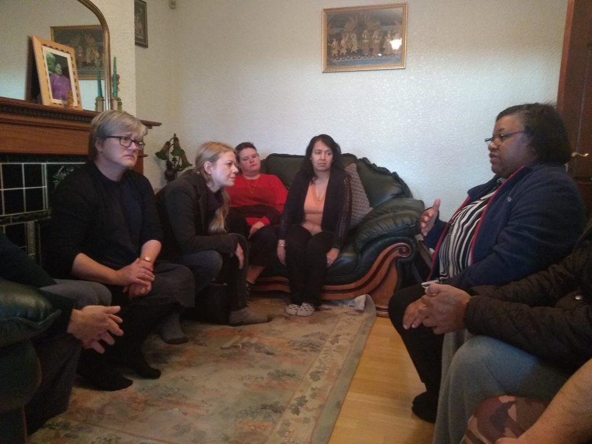

News
The Air is Toxic in Southall – The Talk

At the beginning of August, the Ealing Green Party invited Amrik Maher and CASH and local citizen scientist Tim Webb to give their views on air pollution and the situation in Southall. The result was a fascinating talk! Check it out and see!
Open letter to Ealing Council Leader Julian Bell

Air pollution is also a race issue, with BAME communities disproportionately affected.
After Ealing Council announced anti-racism initiatives in the borough, including holding a virtual protest in support of Black Lives Matter Protests, CASH sent an open letter to Council leader Julian Bell asking for an online meeting and noting that his anti-racism plans won’t reduce the devastating effects of toxic air in the most diverse area of Ealing.
The meeting is expected to take place on or around 16 July and details will be advertised here. It’s also a year since the last public meeting – a year in which there has been no effective action to end the public health crisis facing Southall.

The Residents of Southall tell their story in this New Video
6th March 2020
A new video has been released, telling the story of the Gasworks scandal through the eyes of the residents that live in Southall.
Meena Hans, who commissioned the video, says “The people of Southall are currently facing a grave social injustice.
“For the past three years, they have been breathing in a toxic mixture of arsenic, benzene, naphthalene and many other known carcenogneics which have caused people in the area to become ill with very similar symptoms, including an increase in cancer.
“The toxic air has been caused by the development of the old gasworks site ( Southall Waterside) by Berkeley Group, given the go ahead by Boris Johnson when he was the Mayor of London.
“The residents have not been supported by their local councillors, by Ealing Council or by their MP, so here we have given some of the residents affected a chance to tell their stories.
“Everyone has the right to breathe clean air and not be poisoned in their own homes and streets.
“We will always fight for that right.”
BBC London: substances on the site ‘a threat to health’
On 7 January 2020 BBC London reported air quality expert Professor Harrison from the University of Birmingham as saying levels of some toxic substances released during redevelopment of the site were above safe levels and could exacerbate asthma and lead to cancer. This is the first time that an air quality expert has said publicly what CASH has been raising the alarm about for three years. Prof Harrison said the levels of toxic substances listed on an air quality monitoring report by the Atkins consultants were cause for concern.
The BBC report, which aired on the lunchtime, evening and nightly news, included interviews with a family on Beaconsfield Road who believe their elderly father’s sudden death was linked to the site and with a family whose young son has been hospitalised for asthma many times since work began.
CASH protests outside Southall town hall
Residents were joined by Green Party co-leader Sian Berry, GLA member Caroline Russell and members of Extinction Rebellion for a ‘die-in’ outside Southall town hall on 23 November. About 100 people took part in the protest, with speeches from CASH members as well as Sian Berry and Caroline Russell that demanded Ealing Council take immediate action to stop work on the site and investigate concerns about the health impact of this development.
After the die-in some demonstrators went to the office of Labour MP Virenda Sharma to ask what action he plans to take on their behalf. In 2019 the MP lost a vote of no-confidence after residents complained he had failed to visit their homes or follow up multiple complaints that the site is making people sick.




Sian Berry and Caroline Russell visit Southall
In early November 2019 Green Party co-leader Sian Berry and GLA member Caroline Russell had a very productive meeting with CASH at the home of a resident on Beaconsfield Road.
They had a look at the Southall Waterside site and listened carefully to what residents said about how the development is affecting their health. CASH greatly appreciates the interest and offers of help from the Green Party.
